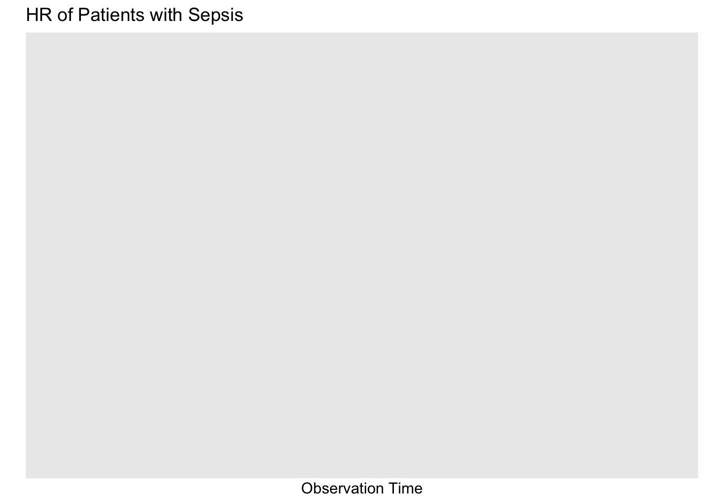
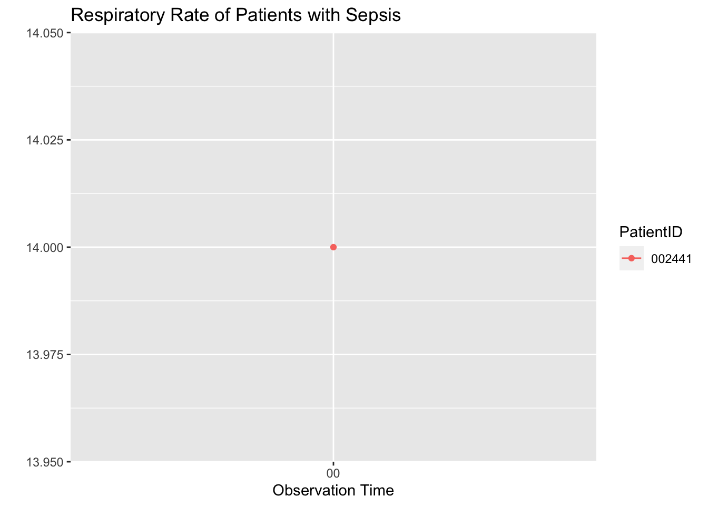

library(tidyverse)library(data.table) ## For the fread functionlibrary(lubridate)source("sepsis_monitor_functions.R")library(tictoc)library(knitr)library(kableExtra)library(DT)# 50 patientstic()data1<-makeSepsisDataset(n=50,read_fn='fread')toc()
library(googledrive)df <-makeSepsisDataset()# We have to write the file to disk first, then upload itdf %>%write_csv("sepsis_data_temp.csv")# Uploading happens heresepsis_file <-drive_put(media ="sepsis_data_temp.csv", path ="https://drive.google.com/drive/u/0/folders/1B2_rwLVYUWavgmTQ0IH8-_Fc4TCvNQwZ",name ="sepsis_data.csv")# Set the file permissions so anyone can download this file.sepsis_file %>%drive_share_anyone()
#TASK 4
## Calling drive_deauth() prevents R from trying to authenticate via a browser## This is needed to make the GitHub Action workdrive_deauth()file_link <-"https://drive.google.com/file/d/1S8cxt5kgdWejiqDj6pDQLbsArxkdSjll/view?usp=share_link"## All data up until nownew_data <-updateData(file_link)## Include only most recent datamost_recent_data <- new_data %>%group_by(PatientID) %>%filter(obsTime ==max(obsTime))#date and time of the reportSys.time()
[1] "2023-04-09 22:50:06 CDT"
#patients who currently have sepsis (if any), along with their most recent heart rate, temperature, and respiratory ratemost_recent_data <- new_data %>%group_by(PatientID) %>%top_n(2, obsTime) %>%arrange(PatientID, obsTime) %>%# arrange by PatientID and obsTime for lagging variablesmutate(dHR = HR -lag(HR),dTemp = Temp -lag(Temp),dResp = Resp -lag(Resp)) %>%slice(-1) # remove the first row of each group, as it will have missing lagged valuessubtable <- most_recent_data %>%filter(SepsisLabel ==1) %>%select(PatientID, HR, Temp, Resp)kable(subtable)
PatientID
HR
Temp
Resp
#plot of HR for patients with sepsisnew_data%>%filter(SepsisLabel ==1) %>%ggplot(aes(x=obsTime,y=HR,color=PatientID))+geom_point()+geom_line()+labs(x="Observation Time",y="",title="HR of Patients with Sepsis")

#plot of temperature for patients with sepsisnew_data%>%filter(SepsisLabel ==1) %>%ggplot(aes(x=obsTime,y=Temp,color=PatientID))+geom_point()+geom_line()+labs(x="Observation Time",y="",title="Temperature of Patients with Sepsis")
#plot of respiratory rate for patients with sepsisnew_data%>%filter(SepsisLabel ==1) %>%ggplot(aes(x=obsTime,y=Resp,color=PatientID))+geom_point()+geom_line()+labs(x="Observation Time",y="",title="Respiratory Rate of Patients with Sepsis")

#A table showing the change in heart rate, temperature, and respiratory rate for all patients subtable2<-new_data %>%group_by(PatientID) %>%top_n(2, obsTime) %>%arrange(PatientID, obsTime) %>%# arrange by PatientID and obsTime for lagging variablessummarise(dHR = HR -lag(HR),dTemp = Temp -lag(Temp),dResp = Resp -lag(Resp)) %>%slice(-1) # remove the first row of each group,color_func <-JS("function(value, min, max, color) {"," if (value > 0) {"," return 'green';"," } else if (value < 0) {"," return 'red';"," } else {"," return 'yellow';"," }","}")datatable(subtable2) %>%formatStyle(names(subtable2),backgroundColor =styleEqual(c(0), c('yellow')),color = color_func )